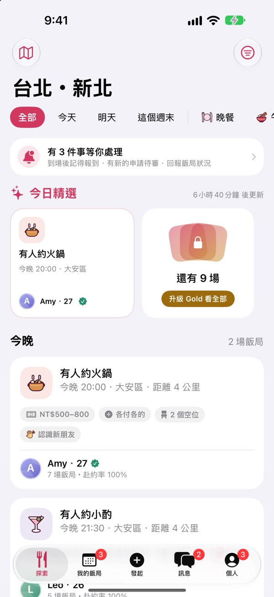
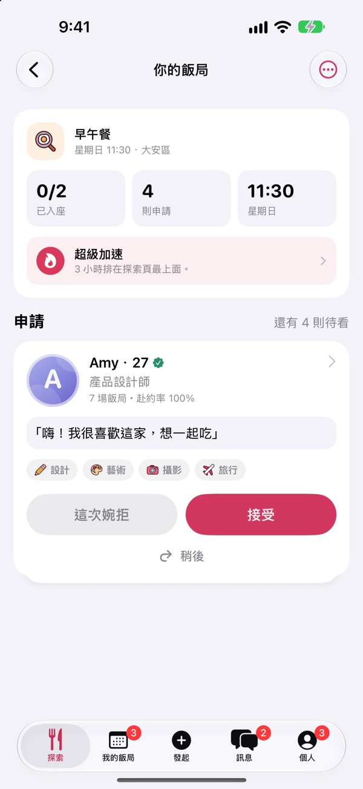

飯飯
先吃頓飯，也許就心動了。
沒有可以滑的人：每一次配對，都是一頓有時間、有地點的飯。
- 發起你想吃的那一餐晚餐、午餐、咖啡或小酌，選好時間、區域、預算和誰請客，幾秒鐘就能發起。
- 由你挑選同桌的人申請一次看一則，照片、介紹和赴約紀錄都看得到；對方確認座位後，聊天室才開啟。
- 真實、可靠、約在公共場所真人驗證、到場報到與赴約紀錄；平台不經手任何餐費，隨時可以封鎖或檢舉。


Dinner first. Sparks, maybe. Post the meal you want, pick who joins, meet in a public place.
For people 18 and older, in Taiwan.